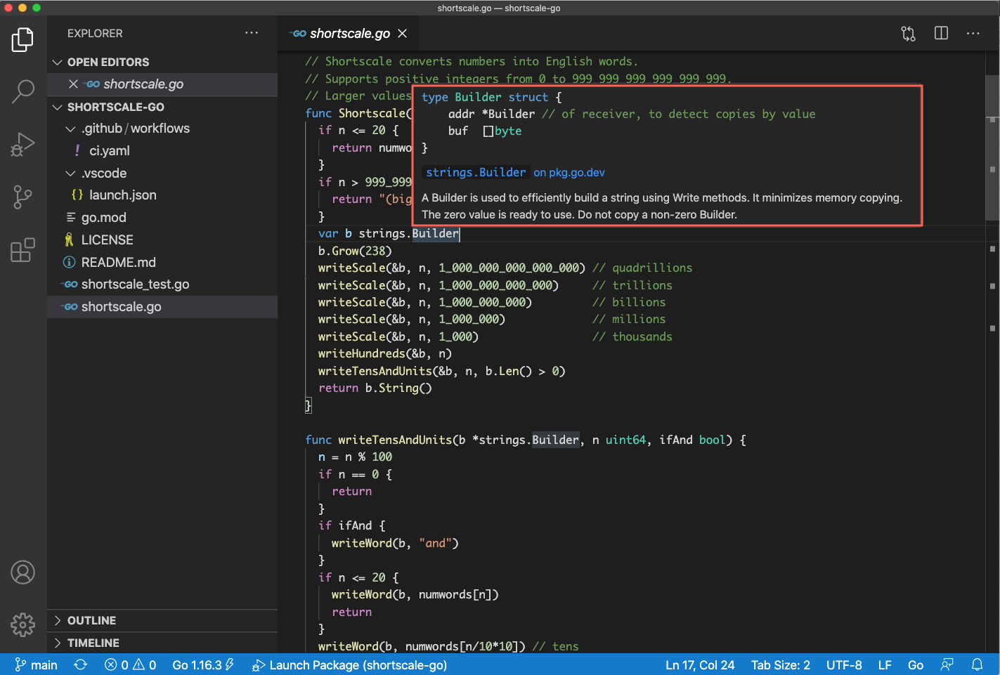

Golang
The Go programming language has become an important tool for developers, particularly around platforms like Kubernetes and Docker.
Go was created at Google by a team whose roots go back to Bell Labs and C. Their motivations included fast compilation time, and productive development of large scale distributed systems, handling high volumes of concurrent requests.
This article describes my experience as a new user of Go, building my first Go library. It follows a learning pattern similar to forays from Node to Rust.
Getting started
The Tour of Go is a great way to get familiar with the language syntax. I started with 'hello world' at golang.org, and found myself going back to the tour for different topics.
The macOS installer copies everything into /usr/local/go, so I opted to download the latest release from https://golang.org/dl/ into a versioned $GOROOT under my home directory. Here's what I have in my '.bash_profile':
export GOPATH=~/go
export GOROOT=~/go1.16.3
export PATH=${PATH}:${GOROOT}/bin:${GOPATH}/bin
VS Code
The VS Code Go extension has improved a lot over the years. It now auto-installs the delve debugger, and the gopls language server. I did not have to do any additional configuration.
Hovering over types like Builder shows source docs, and links to pkg.go.dev.

Porting from Rust to Go
I found it quite easy to port shortscale-rs to shortscale-go.
Go has no ownership syntax, and the run-time includes a garbage collector.
In this case, I was also lucky that the Go strings.Builder standard library package is very similar to the writer pattern I ended up using for Rust.
Overall, I was pleasantly surprised with the readability of the code
package shortscale
import (
"strings"
)
// Shortscale converts numbers into English words.
// Supports positive integers from 0 to 999_999_999_999_999_999.
// Larger values return "(big number)".
func Shortscale(n uint64) string {
if n <= 20 {
return numwords[n]
}
if n > 999_999_999_999_999_999 {
return "(big number)"
}
b := new(strings.Builder)
writeScale(b, n, 1_000_000_000_000_000) // quadrillions
writeScale(b, n, 1_000_000_000_000) // trillions
writeScale(b, n, 1_000_000_000) // billions
writeScale(b, n, 1_000_000) // millions
writeScale(b, n, 1_000) // thousands
writeHundreds(b, n)
writeTensAndUnits(b, n, b.Len() > 0)
return b.String()
}
func writeTensAndUnits(b *strings.Builder, n uint64, ifAnd bool) {
n = n % 100
if n == 0 {
return
}
if ifAnd {
writeWord(b, "and")
}
if n <= 20 {
writeWord(b, numwords[n])
return
}
writeWord(b, numwords[n/10*10]) // tens
units := n % 10
if units > 0 {
writeWord(b, numwords[units])
}
}
func writeHundreds(b *strings.Builder, n uint64) {
n = n / 100 % 10
if n == 0 {
return
}
writeWord(b, numwords[n])
writeWord(b, numwords[100])
}
func writeScale(b *strings.Builder, n uint64, thousands uint64) {
n = n / thousands % 1_000
if n == 0 {
return
}
writeHundreds(b, n)
writeTensAndUnits(b, n, (n/100%10) > 0)
writeWord(b, numwords[thousands])
}
func writeWord(b *strings.Builder, word string) {
if b.Len() > 0 {
b.WriteString(" ")
}
b.WriteString(word)
}
var numwords = map[uint64]string{
0: "zero",
1: "one",
2: "two",
3: "three",
4: "four",
5: "five",
6: "six",
7: "seven",
8: "eight",
9: "nine",
10: "ten",
11: "eleven",
12: "twelve",
13: "thirteen",
14: "fourteen",
15: "fifteen",
16: "sixteen",
17: "seventeen",
18: "eighteen",
19: "nineteen",
20: "twenty",
30: "thirty",
40: "forty",
50: "fifty",
60: "sixty",
70: "seventy",
80: "eighty",
90: "ninety",
100: "hundred",
1_000: "thousand",
1_000_000: "million",
1_000_000_000: "billion",
1_000_000_000_000: "trillion",
1_000_000_000_000_000: "quadrillion",
}
Tests and benchmarks
The testing package provides support for running tests and benchmarks with go test. The GitHub Action workflow for shortscale-go make use of this.
Out of curiosity, I ran BenchmarkShortscale for two variants of the Shortscale function, one which pre-allocates memory for string.Builder, and one which does not. Pre-allocating, reduced the number of allocs/op from 4 to 1, improving ns/op by about 85ns.
Pre-allocated
$ go test -bench . -benchmem
goos: darwin
goarch: amd64
pkg: github.com/jldec/shortscale-go
cpu: Intel(R) Core(TM) i7-9750H CPU @ 2.60GHz
5694252 205.5 ns/op 64 B/op 1 allocs/op
Not pre-allocated
$ go test -bench . -benchmem
goos: darwin
goarch: amd64
pkg: github.com/jldec/shortscale-go
cpu: Intel(R) Core(TM) i7-9750H CPU @ 2.60GHz
4100697 292.9 ns/op 120 B/op 4 allocs/op
Dependency management
Until quite recently, Go did not have built-in package versioning like npm or cargo. This led to incompatibile versioning add-ons, like godep and glide, which made packages with nested dependencies difficult to consume. E.g. see this old INSTALL.md from kubernetes/client-go.
Fortunately, Go modules are enabled as the default in Go since v1.16.
go.mod
I created my shortscale-go module with go mod init following the guide in Using Go Modules.
$ go mod init github.com/jldec/shortscale-go
go: creating new go.mod: module github.com/jldec/shortscale-go
This created a new go.mod file with the following content.
module github.com/jldec/shortscale-go
go 1.16
I was a little surprised that there was no way to indicate the module version inside go.mod. Go relies on git tags in the form vx.x.x for this. As I pushed each version to GitHub, I used the GitHub Releases UI to create the tag.
pkg.go.dev
The shortscale package is published at https://pkg.go.dev/github.com/jldec/shortscale-go
It turns out that fetching any versioned module with go get, automatically adds that module to the registry at go.dev. This feels a little strange at first, but the more I use it, the more I think it's a clever solution.
How about using a similar scheme to create a vendor-neutral registry for ESM modules?
🤔
To leave a comment
please visit dev.to/jldec
powered by pub-server and pub-theme-pubblog